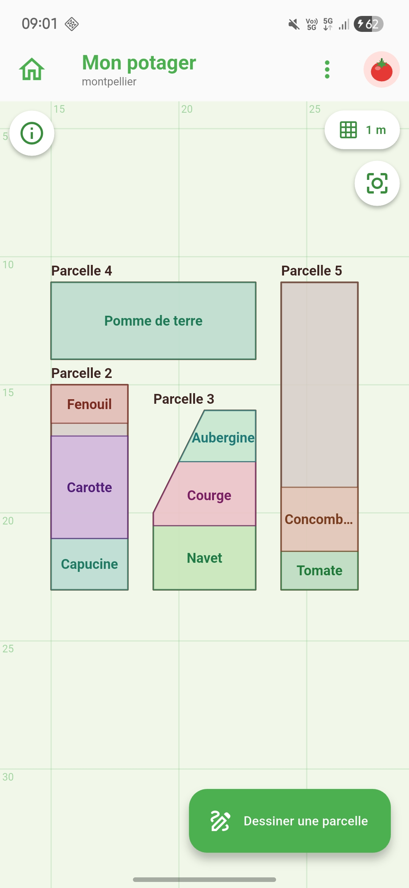

GardenFlow aide les jardiniers à organiser leur potager. On dessine son jardin, ses parcelles et ses zones, on choisit ce qu'on veut cultiver, et l'application conseille quoi planter, où et à quel moment de l'année.
Les conseils tiennent compte de la saison, du type de sol, de l'ensoleillement, des associations entre plantes (certaines s'entraident, d'autres se gênent) et de la rotation des cultures d'une année sur l'autre.
C'est un projet personnel que je mène de A à Z : l'application mobile en Flutter, l'API en Express.js, la base MySQL et l'hébergement avec Docker. Elle sortira bientôt sur le Play Store, dès que le serveur sera en ligne.

Le plan du jardin, avec ses parcelles et ses zones.